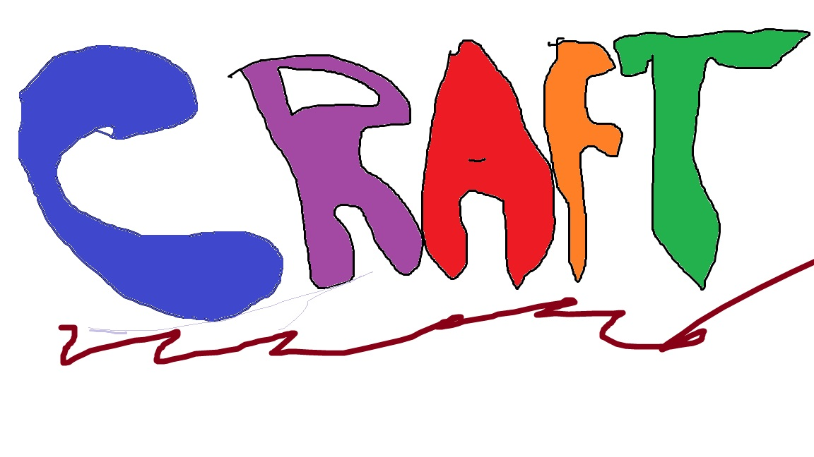

CRAFT IDEAS BY A.S

1.Cut cardboard into 2 equal rectangles (2D).
2. Cut cardboard into 2 other rectangles (2D) but smaller than the first ones.
3. Next,glue/tape all of them into a cuboid as shown.

4. After that, cut another rectangle to cover it.
5.Cut two pieces of paper and glue/tape them onto the pencil case and cover.
6. Cut another rectangle for bottom of the pencil case (cardboard).
7. Decorate the pencil case however you want e.g with colourful paper or glitter.
1. First, draw your hand on a folded piece of paper in a heart shape